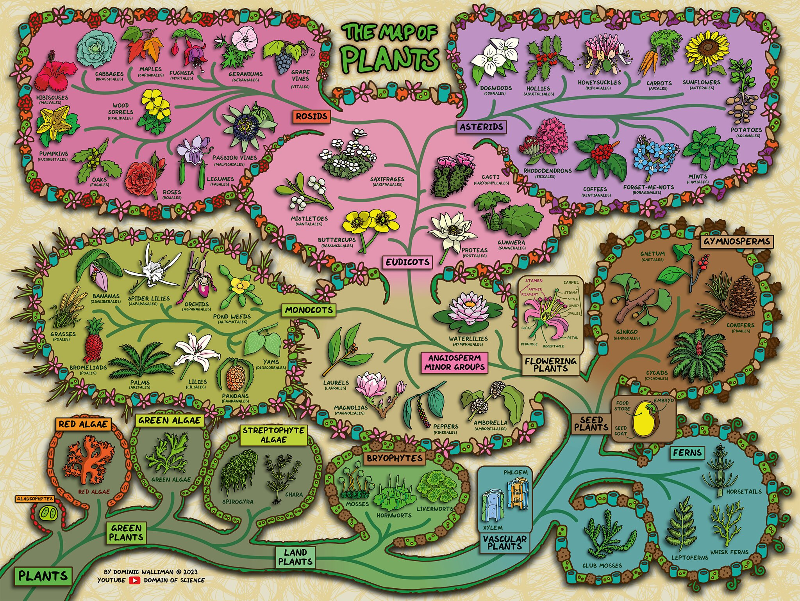

🍀 Welcome to Plant Kingdom 🍀
Welcome to Plant Kingdom—a space to discover, care for, and appreciate the beauty and benefits of plants. Plants enrich our lives by purifying the air, enhancing our well-being, and bringing natural beauty into our homes and gardens.
🌱 About Plants 🌱
Plants are essential to life on Earth. They provide oxygen, food, medicine, and habitats for countless species. Here’s a quick look at what makes plants so fascinating:
🪴 Photosynthesis: Plants convert sunlight into energy, producing oxygen in the process.
🪴 Diversity: From towering trees to tiny mosses, plants thrive in nearly every corner of the planet.
🪴 Indoor Benefits: Houseplants can filter toxins and bring peace to any space.
🪴 Reproduction: Plants reproduce in various ways, from seeds to spores, ensuring their continued growth.